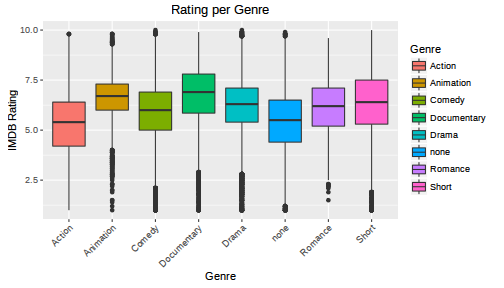
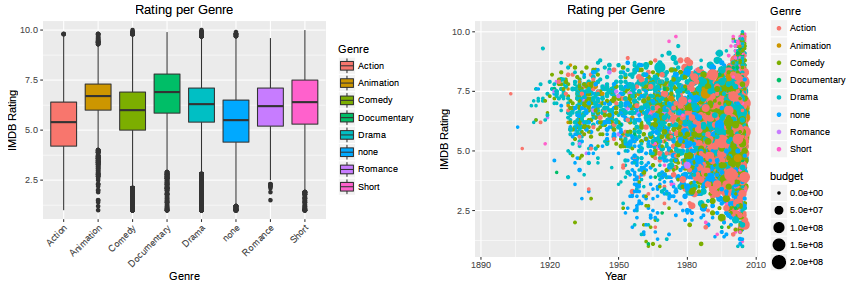

Summarize main characeteristics Seeing what the data can tell us Recognize patterns in advance e.g glampse of how ratings are distributed over genre 
Mainly visualizations of various variables Scatter and bar plots Grid of several variables compared to others ## Warning: Removed 53573 rows containing missing values (geom_point). 
IMDB Movies Database Explorer Visualize the potential dependancy between several variables Limit every variable to specific intervalls Grid plot with a lot of dependent variables at once
John W. Tukey said that too much emphasis was placed on statistical hypothesis testing; more emphasis is/was needed on eploratory analysis Before conducting any regression, prediction exploratory analysis is the first step This app can help greatly to understand the underlying data. Could be expanded to automatically extracts the variables and builds the ui on demand ---